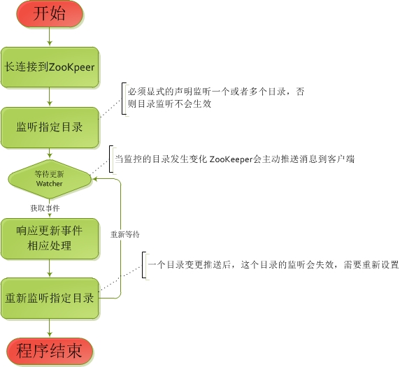

新的在线服务框架
阿里巴巴-高德
阿里巴巴-高德
在线框架 （当前版本 v1.0.0）
| 版本号 | MD5 | 下载 |
|---|---|---|
| 1.0.0 | 93fokudsd | download |
| 版本号 | MD5 | 下载 |
|---|---|---|
| 1.0.0 | 93fokudsd | download |
| 版本号 | MD5 | 下载 |
|---|---|---|
| 1.0.0 | 93fokudsd | download |
| 版本号 | MD5 | 下载 |
|---|---|---|
| 1.0.0 | 93fokudsd | download |
新框架采用Spring容器作为核心，实现对于数据库数据的分库和分表。新框架主要作为在线（前端）框架使用，使用框架默认的平均分配算法，通过框架提供的注解工具，轻松实现数据的分库分表的，使用者也可以实现分库分表算法来对数据库的横向和纵向切分。
框架在通常状况下，由于已经对数据进行了切分，对于数据库的操作，默认通过分区字段信息对分区数据所对应的单数据库单表进行操作，将大幅度提高数据库效率和系统开销。在某些情况下，框架提供跨分片的数据库操作接口（批量查询或者批量更新）或者基于Lucene的搜索引擎工具进行跨分片跨表查询。
框架支持数据源的热部署和基于框架的应用程序的配置信息的热部署，并且支持分区数据的数据跨分区迁移，框架将会提供相应的在线工具来配置数据源，应用配置信息和数据迁移（目前开发中）。
新框架的整体架构图如下图所示，完全基于互联网和阿里的相关技术，通过Dubbo的广播将所有Service层以下（含Service层）都打包到Dubbo服务中，Service层以上（Servlet或者Controller层）部署到Tomcat或者Jetty中，直接做到服务层和前端访问层分离，是整个系统扩展性更高，稳定性更好。
服务中心基于Alibaba Dubbo框架，请参阅相关文档。
用户指南： http://alibaba.github.io/dubbo-doc-static/User+Guide-zh.htm
开发者指南：
http://alibaba.github.io/dubbo-doc-static/Developer+Guide-zh.htm
Dubbo FAQ: http://alibaba.github.io/dubbo-doc-static/FAQ-zh.htm
Dubbo社区：
http://alibaba.github.io/dubbo-doc-static/Community-zh.htm
新框架提供了配置中心工具，提供配置中心工具的目的在于解决两个问题，框架的启动的基本配置和框架运行中的配置热部署，基本上做到了配置和应用程序部署包解耦，让框架的使用者和维护者使用基于WEB页面的工具,对应用的配置项目进行轻松配置。同时，配置中心工具也提供了基于Zookeeper的节点心跳监控,在一定程度上对各个应用节点进行实时监控，下图展示了整个配置中心工具的架构图:
基于上图，配置中心提供了开发模式和运行模式两个场景选择，在开发模式下，开发人员通过配置中心工具配置并获取基于JSON配置文件，下载到本地的开发环境中去以后，就可以完成新框架的核心配置，并启动新框架进行开发，这部分会在后面的章节中进行详细说明，在运行模式下，运维人员通过配置中心工具，对需要初始化部署或者热部署的数据源信息和自定义信息（Properties）进行修改后，结合配置中心提供的基于ZooKeeper节点心跳监控功能，通过由配置中心发出更新配置的ZooKeeper指令消息，来完成各个节点的配置信息更新和部署。
无论使用开发模式还是运行模式，配置信息是存储在本地文件系统，还是存储在ZooKeeper,都离不来一种合理的配置信息存储数据结构，我们需要一种具有普适性和扩展性的数据结构，去满足新框架的核心和自定义属性的配置要求，因此 我们制定了一套基于目录的树型的结构体，如下图所示：
在运行模式中，ZooKeeper的目录结构完全和上面所述的结构相同，当基于新框架开发的应用在配置为运行模式启动（使用ZooKeeper配置中心启动）的时候，都会根据配置的应用名称，去ZooKeeper的配置树的固定节点位置取相关的动态配置信息。获取的base配置信息将在启动时被结构化为新框架的核心类（数据源、分表、分库、索引信息）实例注入到新框架容器中，获取的biz自定义配置信息，将通过字节码技术（基于Javassist）在应用本地直接生成一个类文件，并会加载到ClassLocader中，以供调用属性的时候使用.如果应用使用了自定属性的话，可以在classes文件目录下找到如下方式命名的类文件
autonavi.online.framework.property.PropertiesConfigImpl1413012247518.class
在开发模式下，由于json文件式的配置更具灵活性，因此，开发模式所使用的配置JSON结构会和ZooKeeper有所差异，但是最终实现的扩展性和兼容性和开发模式是一致的，也是会分成base和biz两部分，分别实例化注入到新框架容器和生成字节码文件，如下分别是base和biz的开发模式JSON配置文件实例：
//base.json
{
"dataSources": [//数据源信息部分
"java.util.HashMap",
{
"1": {
"beanClass": "com.mchange.v2.c3p0.ComboPooledDataSource",//数据源类型
"name": "c3p0DataSource1",//唯一名称
"props": [ //属性
"java.util.HashMap",
{
"acquireRetryAttempts": "30",
"acquireRetryDelay": "100",
"maxIdleTime": "60",
"testConnectionOnCheckout": "false",
"breakAfterAcquireFailure": "false",
"password": "******",
"acquireIncrement": "100",
"idleConnectionTestPeriod": "60",
"maxPoolSize": "20000",
"maxStatements": "100",
"minPoolSize": "100",
"driverClass": "com.mysql.jdbc.Driver",
"initialPoolSize": "100",
"jdbcUrl": "jdbc:mysql://10.19.3.159:3306/addresscollect?rewriteBatchedStatements=true",
"user": "root"
}
]
},
"2": {
"beanClass": "com.mchange.v2.c3p0.ComboPooledDataSource",
"name": "c3p0DataSource2",
"props": [
"java.util.HashMap",
{
"acquireRetryAttempts": "30",
"acquireRetryDelay": "100",
"maxIdleTime": "60",
"testConnectionOnCheckout": "false",
"breakAfterAcquireFailure": "false",
"password": "******",
"acquireIncrement": "100",
"idleConnectionTestPeriod": "60",
"maxPoolSize": "20000",
"maxStatements": "100",
"minPoolSize": "100",
"driverClass": "com.mysql.jdbc.Driver",
"initialPoolSize": "100",
"jdbcUrl": "jdbc:mysql://10.19.3.160:3306/addresscollect?rewriteBatchedStatements=true",
"user": "root"
}
]
}
}
],
"shardIndex": 1,//索引库数据源编号
"indexTableMap": [//索引表信息
"java.util.HashMap",
{
"demo_index": [//索引表名称
"java.util.ArrayList",
[
{
"name": "name",//索引字段
"columnType": "string",
"columnName": "name",
"length": 100
}
]
]
}
],
"segmentTables": [//分表信息
"java.util.ArrayList",
[
{
"name": "demo",//要分的表名称
"count": 2//分为几个表
}
]
]
}
//biz.json
{
"id": "123",
"pushConfig.url": "http://10.13.5.43:28080/pushservice/push"
}
这种配置的方式应该非常一目了然。base的配置中，dataSources代表的是数据源配置，包含数据源类型，连接属性，唯一名称,shardIndex和indexTableMap代表了索引的位置和索引库的位置，segmentTables代表了分表的相关的描述。biz的配置中则更简单，基本和常用的Properties文件是一致的。
在用户了完成了开发模式或者运行模式的配置之后，要做的就是启动应用开始运行，为了使应用能够正常启动，框架规划了如下的配置信息，需要由用户自己加载到任意Spring配置文件中。
<cc:config>
<-- base配置处理类引用 -->
<cc:base ref="zkBase"></cc:base>
<-- biz配置处理类引用 -->
<cc:biz ref="zkBiz"></cc:biz>
<-- 如果使用开发模式的方式 使用如下配置 将下载的JSON保存到CLASSPATH -->
<-- <cc:base configJson="/base.json"></cc:base> -->
<-- <cc:biz configJson="/biz.json"></cc:biz> -->
</cc:config>
<-- ZK连接信息 只在运行模式才需要加载-->
<bean id="zkConfig" class="autonavi.online.framework.support.zookeeper.ZooKeeperProp">
<property name="address">
<value>10.19.2.10:2181,10.19.2.10:2182,10.19.2.10:2183</value>
</property>
<property name="sessionTimeout">
<value>1000</value>
</property>
<property name="projectName">
<value>demo</value>
</property>
<property name="password">
<value>******</value>
</property>
</bean>
<-- base配置加载处理类 只在运行模式才需要加载-->
<bean id="zkBase" class="autonavi.online.framework.support.zookeeper.ConfigCenterFromZooKeeper">
<property name="zooKeeperProp" ref="zkConfig"></property>
</bean>
<-- biz配置加载处理类 只在运行模式才需要加载-->
<bean id="zkBiz" class="autonavi.online.framework.support.zookeeper.GetPropertiesDataFromZooKeeper">
<property name="zooKeeperProp" ref="zkConfig"></property>
</bean>
按照上面的配置，完成应用端的配置后，就可以启动应用程序了，应用程序在启动时，新框架内部采用自定义的XSD（自定义XML标签）方式，带起核心配置和自定义配置的加载。关于自定义XSD的相关使用和技术，可以去百度自行查询，启动的时候对框架的几个核心部分数据源、索引表，分表信息、框架插件、DAO切面和Service切面进行初始化，初始化的流程图如下:
如上图所示，图中注释提到的两个接口实现，在开发模式下。框架内部直接实现了基于JSON解析的默认接口实现方式，来完成所有配置信息的加载。在运行模式下，框架为了实现如下的两个接口
autonavi.online.framework.cc.InitBaseConfig autonavi.online.framework.cc.property.PropertiesData
框架也提供了默认的基于ZooKeeper的实现，需要在应用的Spring配置中，注入如下两个接口的实现
autonavi.online.framework.support.zookeeper.ConfigCenterFromZooKeeper --实现 autonavi.online.framework.cc.InitBaseConfig autonavi.online.framework.support.zookeeper.GetPropertiesDataFromZooKeeper --实现 autonavi.online.framework.cc.property.PropertiesData
根据流程图，获取配置信息后，将开始组建系统的几个核心部分，包括数据源信息，分表分库，数据源路由的初始化等相关核心组件的注入新框架容器。新框架为了自身的安全和使用中不给使用者造成不必要的问题，数据源路由等框架持有的核心部分并没真正注入到容器，也就是说容器中并不会直接暴露出数据源信息，就意味着使用者通过容器是获取不到数据源或者路由等核心信息，这样将保证所有的数据源层面的操作，都由框架进行控制和操作，防止因为数据源的开放而导致开发对数据库的误操作。
对于用户自定义biz的配置，新框架没有选择写入容器，而是直接使用基于javassist的字节码方式生成一个实类，然后放到应用的ClassLoader中加载，这样做主要是如下原因：
1.较比注入容器，字节码的方式效率更加高效。 2.较比注入容器，字节码的方式热部署加载更加方便和安全，这部分会在后面的热部署部分详细讲解。 3.尽量减小框架容器的负担
配置中心在从设计和规划上来说，是管理以后所有的基于新框架开发的应用，或者说是几个基于新框架开发的应用使用一套配置中心，另外几个新框架开发的应用使用另一套配置中心。这就意味应用与应用之间需要做隔离，在配置中心的ZooKeeper目录中，已经按照应用的名称进行了隔离，但是这种隔离从安全的角度上说还是不够的，能有一个密码的校验方式应该更安全些，但在配置中心的整体架构下并没有关系型数据库来存储这些密码的的设计，因此只能使用ZooKeeper的自身安全机制来实现。
为了解决上面的问题，一方面，ZooKeeper支持在创建一个目录的时候，给这个目录加上权限，但是需要注意的是，这个权限并不是只要在根目录上面设置了，子目录就具有相同权限，而是需要子目录再去重新设置和上级目录相同的权限才行。
另一方面，参考了linux系统中的密码文件方式，新框架在ZooKeeper中专门设计了一个目录，这个目录中的子目录就是以应用名称命名的密码目录，这个目录只有一个配置中心设置的专门用户才能访问，保证了相对的安全，各个应用修改配置的时候，需要先通过密码的校验，然后再根据应用自身的权限去处理应用所有的配置目录。
根据上面两方面的描述，为了解决应用配置的安全性问题，配置中心在安全性设置上的整体流程如下图所示：
配置中心在所有的应用的配置信息的存储目录采用了双权限的设计，就是说存在两把钥匙能打开某个存储配置的目录，一把钥匙由应用自己持有，由配置中心负责生成，就是应用登录配置中心使用的账户和密码，另一把钥匙由配置中心统一持有，并不会暴露给各个应用，这样做也是为了出现当应用的账户出现密码遗忘的时候，配置中心可以快速查找和恢复丢失的账户。
出于新框架下应用的运行安全性能考虑，在设计原则上并不支持去改变登录配置中心的密码的，一方面是因为ZooKeeper的目录访问权限如果密码发生变化，就意味着所有的持有这个权限的所有的目录都需要重新设置权限来应对这个变化，这就显得很麻烦也没有必要，毕竟这是纯对内维护使用的东西，不会暴露在互联网环境中,另一方面是因为登录配置中心使用的用户名和密码，同应用在运行模式部署时候使用的ZooKeeper的用户名和密码是一致的，是一套东西，更改了一边，而另一边没有改就会造成很多问题。因此，不提供更改密码的功能。
从ZooKeeper的技术来说，新框架使用的目录权限是基于ZooKeeper原生的digest方式，如果使用原生的ZooKeeper命令行客户端去赋予某个目录权限，则在创建一个目录的时候，使用如下命令来给予一个ZooKeeper连接的用户权限，当目录建好后，这些设置的用户密码对将获得操作这个目录的权限
create 目录 内容 digest:用户名1:密码1,digest：用户名2:密码2
如果使用基于的java的apache的ZooKeeper客户端，则可以使用如下代码段来赋予一个客户端权限，
......
List acls = new ArrayList();
Id id2 = new Id("digest",DigestAuthenticationProvider.generateDigest(appRoot + ":"+ passwd));
ACL acl2 = new ACL(ZooDefs.Perms.ALL, id2);
acls.add(zookeeperInit.getAcl());
acls.add(acl2);
zooKeeper.create(path, bytes, acls,CreateMode.PERSISTENT));
.....
在存储比较复杂的一套数据结构的时候，一个比较好的方式，就是将这些结构一次性设置好，然后统一提交后才生效，这就很类似于关系型数据库的事务控制，统一提交，如果出现问题，一个事务中所有操作都是不生效的，ZooKeeper提供了一个类似于这种事务的机制，就是保持住一个批量，然后统一提交，需要注意的是，如果提交时候出错，是不会像关系型事务那样完整回滚的。在配置中心中的运行模式中就应用了这种机制，保证所有的配置更新都是走批量去更新，配置中心的运行模式的配置库的更新流程为：
由于ZooKeeper的一些特殊机制，在使用ZooKeeper事务的时候做了如下的处理
1.在创建目录的时候，必须在根目录创建完成后，才能创建子目录，不能越级创建。
2.在删除目录的时候，必须先删除子目录，在删除的根目录，不能在含有子目录的时候删除根目录（若使用ZooKeeper命令行可以用rmr命令忽略这点）
3.ZooKeeper的内部的所有目录和数据全部采用UTF-8编码的Byte
4.Zookeeper的事务更新时候需要使用如下方式来延续事务
transaction.set(transaction.get().create(path, bytes, acls,CreateMode.PERSISTENT))
新框架在设计中支持两种配置的热部署，分别是数据源的热加减和应用自定义的属性（Properties）的热部署。数据源的热加载又包括了数据库的一些连接属性信息的的热部署。而如索引库位置，索引表信息，分表信息则不支持热部署，索引信息和分表是系统核心，如果切换必须要迁移数据完成后才能完成，因此配置工具不做热部署支持，如果需要切换索引信息和分表信息，请在完成数据迁移后，在配置中心做冷部署配置，然后重启应用完成，配置中心运行模式下的配置支持方式如下表所示：
| 配置项目 | 热部署支持 | 冷部署支持 | 说明 |
|---|---|---|---|
| 数据源配置 | 增加,减少，连接属性变更 | ||
| 索引库信息 | 索引表所在数据源位置配置，数据迁移后，冷部署生效 | ||
| 索引表信息 | 索引表的相关信息描述，数据迁移后，冷部署生效 | ||
| 分表信息 | 数据表拆分相关信息描述，数据迁移后，冷部署生效 | ||
| 自定义属性配置 | 类似于Properties |
数据源的热部署的基本实现原理采用的是采用的比较简单的static对象方式，这种方式和使用容器的方式来热部署相比，更灵活更安全些，已经被正在使用的数据源并不会被替掉。需要注意的是，由于索引库不支持热部署替换，因此，在运行环境下已经设置为索引库的数据源并不能够被删除和变换索引库位置。原理示意图如下所示：
自定义属性配置的基本实现原理采用的是Javassist的字节码方式，每当应用的配置发生了变化，会生成新的字节码（class）文件，并被加载到运行环境的classloader中，以后每次的属性调用会走新的字节码生成的属性配置，原先旧有的字节码文件会被删除，但是并不会从classloader中删除，这样正在调用替换前的实现类的方法也不会受到影响。如下列表标示在热部署情况下发生同一属性配置被调用和修改的场景，并给出了结果
| 线程描述 | 时间：1毫秒 | 时间：2毫秒 | 时间：3毫秒 | 时间：4毫秒 |
|---|---|---|---|---|
| 获取属性A的线程，假设A=5 | 启动 | 开始获取属性A | 获取到A=5（classloader没有变化） | 线程已经完成 |
| 修改属性A的线程，设置A=3 | 生成新的字节码文件，删除旧的字节码文件 | 载入ClassLoader | 设置完成 | 线程已经完成 |
| 获取属性A的线程 | 还未启动 | 启动 | 开始获取属性A | 获取到A=3 |
前面部分是对配置最终在应用端热部署并生效的设计，下面来描述一下如何通过ZooKeeper的推送机制来将这些配置更新。
一个应用程序很有可能会部署多个节点来集群，为了达到在配置更新时候检测一个节点的状态是否正常，新框架设计了基于ZooKeeper校验的心跳机制，这个心跳每隔5秒，节点会和ZooKeeper交互一次，这个交互会更新一个ZooKeeper目录来刷新时间，配置中心通过读取这些心跳节点的更新时间来判断某个节点当前的ZooKeeper连接状态，达到监控节点是否正常的目的。心跳机制的示意图如下：
ZooKeeper同各个客户端（就是应用）的通信是一种长连接方式，就是说明在网络稳定的情况下，这个连接是一直存在，这就意味着ZooKeeper可以和客户端之间做消息推送，只需要客户端提供需要收到消息推送的范围，这个范围就是客户端需要监听的ZooKeeper目录，客户端需要显式的告知ZooKeeper要监听哪个目录。每当这个被监听的目录被做过任何更新操作，ZooKeeper会将这个这个目录的更新封装成为一个事件消息发给客户端，客户端通过ZooKeeper的Watcher监听这个事件，接收后对这个事件进行处理。由于某个目录在监听响应后监听将失效，因此处理完成后，如果还需要继续监听这个目录，还需要重新设置并告诉ZooKeeper目录监听继续响应。下面的示意图表示一个ZooKeeper目录的完整响应。

在配置中心中，对应一个应用的各个部署节点，都会有一个自己的独立的监控目录，在这些独立的监控目录中，有两个独立的目录是给各个应用监控配置版本号变化使用，这两个目录分别是数据源配置的版本号和自定义配置的版本号，当配置变化后，配置中心会根据心跳的状态选择可以更新配置的节点，并更新选中节点的数据源配置版本号和自定义配置版本号目录，选中的节点的应用的本地程序会响应版本号变更，来完成后面的配置热部署操作，
同时为了保证节点的正常和完整更新，配置中心的热部署大致分为三步
第一步，通过配置中心工具，在配置页面进行配置操作，完成后，最新的配置的将被保存在一个ZooKeeper的临时目录，并不更新正式的配置目录。
第二步，通过配置中心工具，在ZooKeeper中，找到需要热部署配置的节点所监听的目录，并设置内容为"唯一序列_P"形式的版本号，节点通过watcher获取这个版本号后，更新这个节点对应的ZooKeeper私有版本目录的版本号。
第三步。配置中心比较各个节点的对应ZooKeeper私有版本目录的版本号和第一步更新的版本号是否一致，如果一致，将临时配置目录中的内容完整覆盖正式目录的对应目录中，并在ZooKeeper中，找到需要热部署配置的节点所监听的目录，并设置内容为"唯一序列_C"形式的版本号，节点通过watcher获取这个版本号后，则获取最新配置内容并完成热部署，
以某一个应用节点为例，一次完整的热部署流程可以描述为：
新框架的分片分表实现采用与MangoDB类似的方式：使用者需要先定义片键（这里片键的概念与MangoDB是类似的），这个片键允许使用一些简单的类型如int，double或Date等，但Clob、Blob等不在允许的范围内。当数据要进行分片时，会将片键对应的值记录到索引表中，在下次同样的片键出现时，就依据记录将程序引导至不同的分片上。下图演示了这个过程：
你也许会觉得这个过程太过复杂，但对于最终的开发者来说，他要做的事情可能只是下面演示的那样：
@Author("ang.ji")
@Select(indexName = "demo_index", indexColumn = "m.name")
public Object select(@SqlParameter("m") Map<String , Object> m) {
return "select id from demo where name=#{m.name}";
}
没错，你只需要定义一个方法，加上一些与片键有关的注解，并把你要执行的SQL返回给框架就可以了（当然，我相信你还是对这些符号所表示的意思感到困惑，先放轻松，我们后面会讲到的）。
我想你一定迫切的想知道这是怎么实现的，别急，下面就为你解惑。
新框架对分片分表的支持是从Dao开始的，Dao需要提供相关的分片信息，新框架会代理这个Dao，对其进行改造。下面是一个“被改造”后的Dao的大致的时序图（这里说“大致”的原因在于：这个时序图合并了所有的可能的与jdbc有关的操作。对于单独的操作（比如select和update），该图可能会呈现出不同的样子。）：
仔细的看过这张图后，你可能看发现几乎所有的事件都发生在
DaoHelper
这个类上。没错，这个类就是框架分片分表的核心，这里集成了几乎所有的与数据库有关的操作，下面我们要讲的实现原理中，有一大部分都出自这个类。
上面只是一个概括的说明，下面我们来详细的了解一下分片分表的具体实现原理。
我们先来看下面这张流程图：
你也许会注意到上图中的第一个流程节点里的内容，并感到困惑——毕竟用户的Dao只返回了一个
String
。实际上，框架使用了AspectJ做为切面工具，将用户的Dao进行了一番“包装”，使这个Dao具有了很强大的功能——能够在不同的分片上执行各种SQL语句并返回结果。
在刚进入这个“包装”的时候，框架会从用户的Dao得到所有它关心的东西：注解里的信息，用户返回的SQL……，然后它会判断到底要执行什么操作，原理是用户Dao上的不同注解，比如，如果用户Dao上的注解是
@Select
，那么就要进行查询操作；同理，如果得到的是
@Update
，就要进行更新操作。
在得到了执行的类型后，框架会选择不同的方法——就像图上画的那样——他们几乎都调用了
SqlHelper
。
下面，我们要深入
SqlHelper
的各个方法，为你揭示它们的实现原理。
提到数据操作，我们最先想到的应该是Select，因为它是使用最多的。下面我们来看看框架是怎么做的。
看晕了吧？确实比较复杂，下面我们把这张图分解成若干个步骤来分别讲解。
@SingleDataSource注解进行指定。这个注解接受两种类型的参数，要么是数据源的ID（只能是1到32的整数。为什么？一会会讲到），要么是一个名字。至于这两个入参的具体含义，后面会讲到。）。如果你没有指定，就会去里查一个出来。到索引库里查询的过程后面会有一个小节专门来讲，现在先跳过去，你就知道得到了分片的信息就行了。@Author("ang.ji")
// @SingleDataSource(1)// 直接指定数据源为1
@SingleDataSource(keyName = "m.keyId")// 或是从入参中取得
@Select(indexName = "demo_index", indexColumn = "m.name")
public Object select(@SqlParameter("m") Map<String , Object> m) {
return "select id from demo where name=#{m.name}";
} 上面的例子中演示了两种指定数据源的方式，我们推荐在确定知道数据源ID的情况下使用第一种方式，因为这样性能会更好一些。@Select注解中添加@Page注解参数。这个参数里还有两个参数，分别为skip和size，分别代表了MySql中的跳过行数和查询行数。如果翻译成SQL，应该是这样的：select
* from table limit <skip> <size>）。如果配置了分页参数，框架会取到它们，并用MySql方言对用户的SQL进行包装。下面这个例子演示了如何通过Dao在MySql中查询1000到1010行记录的方法：@Author("ang.ji")
@Select(indexName = "demo_index", indexColumn = "m.name", paging = @Page(skip = 1000, size = 10))
public Object select(@SqlParameter("m") Map<String , Object> m) {
return "select id from demo where name=#{m.name}";
}table替换成table_3。这里要注意的是，出于性能考虑，框架内部使用了正则表达式（你觉得SQL语法解析会比字符串的查询更快吗？）。这就要求SQL里不能出现与表名相同的字符串。这很重要，因为会导致SQL执行错误。
@Author("ang.ji")
@Select(indexName = "demo_index", indexColumn = "m.name")
public Object select(@SqlParameter("m") Map<String , Object> m) {
return "select id from demo where name=#{m.name}";
} 请注意红色的部分，#{m.name}就是指我们所说的表达式。它所代表的意思是从@SqlParameter("m")
Map<String , Object> m中得到名字为name的属性值。前面的这个m对应的是@SqlParameter("m")，也就是说，这个注解里的名字与这个m是相同的，如果注解里的名字发生变化，表达式中的名字也需要跟着发生变化。Map<String
, Object> m。这个名字与表达式里的名字没有任何关系。了解jvm的同学一定知道，正常情况下，在运行期是无法从堆里得到这个名字的。所以，全都以注解里的为准。m.name的含义就是从一个名字叫m的入参里取到一个key为name的值。因为m是一个Map<String
, Object>，所以，对应的伪码可能是这样的：m.get("name");
可以看出，表达式是可以支持从Map里取值的。当然，它不仅仅能从Map取值，它还支持JavaBean、List接口的任意实现和数组。List接口的任意实现和数组是一种集合类型，它们可以包含Map和JavaBean。Map我们刚才已经介绍过了，那JavaBean是什么？我们来看一下它的定义：
JavaBean 是一种JAVA语言写成的可重用组件。为写成JavaBean，类必须是具体的和公共的，并且具有无参数的构造器。JavaBean 通过提供符合一致性设计模式的公共方法将内部域暴露成员属性。众所周知，属性名称符合这种模式，其他Java 类可以通过自身机制发现和操作这些JavaBean 的属性。上面的这段话来自百度百科。对于一个
JavaBean来说，最重要的就是：
public类型的getter、setter方法；
getter、setter方法？我们来看个例子：public class TestJavaBean{
int id = 0;
String name = null;
public void setId(int id){
this.id = id;
}
public int getId(){
return this.id;
}
public void setName(String name){
this.name = name;
}
public String getName(){
return this.name;
}
} TestJavaBean类就是一个标准的JavaBean。它拥有两对getter、setter方法。需要注意的是：getter、setter方法都需要符合“驼峰规则”——跟在get和set后面的第一个字母必须大写；但在表达式中，这个字母却必须小写。还有一个要注意的地方是，我们关心的只是getter、setter方法，至于你的变量叫什么名字，与我无关！m是TestJavaBean的对象：@Author("ang.ji")
@Select(indexName = "demo_index", indexColumn = "m.name")
public Object select(@SqlParameter("m") TestJavaBean testJavaBean) {
return "select id from demo where name=#{m.name}";
} 那么现在m.name的伪码是什么样子的呢？
m.getName();没错，就是这样。
List和数组呢？@Author("ang.ji")
@Select(indexName = "demo_index", indexColumn = "m.[0].name")
public Object select(@SqlParameter("m") TestJavaBean[] testJavaBeans) {
return "select id from demo where name=#{m.[0].name}";
} 看到了吗？我们只是在m和name之间加了一个[0]而已，这样就能取到数组中的第一个TestJavaBean对象了。对于List，情况是完全一样的。最后，我们来看一下伪码：m[0].getName();//数组 ((TestJavaBean)m.get(0)).getName();//List
ResultSet。
ResultSet传给用户的接口方法，让用户自己处理；否则会调用Apache的commons-dbutils的相关方法进行返回。ResultSet用户接口的使用方法。用户必须实现ResultSetCallback接口，并在Dao方法上注册这个接口实现。注册方法有两种：
public class ResultSetCallbackImpl implements ResultSetCallback {
@Override
public Object process(ResultSet rs) throws SQLException {
if (rs.next()) {
//do something...
}
return null;
}
}并且在注解上注册其Class。@Author("ang.ji")
@Select(indexName = "demo_index", indexColumn = "m.name", callbackClass = ResultSetCallbackImpl.class)
public Object select(@SqlParameter("m") Map<String , Object> m) {
return "select id from demo where name=#{m.name}";
}@Author("ang.ji")
@Select(indexName = "demo_index", indexColumn = "m.name")
public Object select(@SqlParameter("m") Map<String , Object> m, ResultSetCallback<?> callback) {
return "select id from demo where name=#{m.name}";
}并在调用的时候匿名实现这个接口。demoDao.select(m, new ResultSetCallback() {
@Override
public Object process(ResultSet rs) throws SQLException {
if (rs.next()) {
//do something...
}
return null;
}
});ThreadLocal里。所以，这个值是一个“临时”的，必须要在其内容被覆盖之前得到它。DaoHelper.getCount();这里使用了一个我们从来没有见过的类：
DaoHelper。这个类里包含了获取总行数，主键（组）等方法。我们后面将会更多的见到它。
List<Map>。如果你想要返回别的东西，可以在注解上使用resultType和returnOne进行定义。原则上，框架支持你返回单/多行的Map，Object[]，基础数据类型（Java中定义的八种基础数据类型再加上String）和JavaBean。如果不做说明，框架会返回包含这四种类型的List，如果需要返回单条记录则要专门进行指定。下面这个例子说明了这两个参数的用法。@Author("ang.ji")
@Select(indexName = "demo_index", indexColumn = "m.name", resultType=Object[].class, returnOne=true)
public Object select(@SqlParameter("m") Map<String , Object> m) {
return "select id from demo where name=#{m.name}";
} 这个例子演示了如何返回单条的Object[]。如果你想返回int或String或JavaBean之类的，把resultType替换成对应的类就可以了。
上面就是一个完整的查询过程。下面我们列出
@Select
注解所有的参数供参考。
| 参数名称 | 释义 | 类型 | 举例 | ||||||||||||
|---|---|---|---|---|---|---|---|---|---|---|---|---|---|---|---|
| indexName | 索引表的名字 | String | demo | ||||||||||||
| indexColumn | 片键名称。可以为多个，以逗号隔开 | String | m.name,n.[2].sex | ||||||||||||
| paging | 用于配置分页的子注解 | ||||||||||||||
@Page
|
|||||||||||||||
| resultType | 返回类型 | Class | TestJavaBean.class、HashMap.class、Object[].class | ||||||||||||
| returnOne | 是否单行返回 | boolean | true、false（默认） | ||||||||||||
| queryCount | 是查询总行数 | boolean | true、false（默认） | ||||||||||||
| callbackClass | 手工处理ResultSet的入口，如果添加了这个属性，框架将不再自动处理结果。由用户自己处理。该类需要实现ResultSetCallback接口 | Class | ResultSetCallbackImpl.class | ||||||||||||
你也许注意到了流程图中三个标示为“子流程”的节点，下面我们来分别介绍他们。
上图展示了如何从索引表中获取数据源的信息。下面我们来分步讲解。
Dao注解上获取indexName的值（实际上这个从注解上获取的动作在进入Dao
Aspect的时候就已经发生了，这里的获取只是从方法入参中获取）。这个值所代表的是一个索引表的名字。@Author("ang.ji")
@Select(indexName = "demo_index", indexColumn = "m.name")
public Object select(@SqlParameter("m") Map<String , Object> m) {
return "select id from demo where name=#{m.name}";
} 下面，我们来了解一下什么是索引表。name的业务字段的索引表。除了这个字段外，ID、SHARD_ID、MIGRATION_LOCK和OLD_SHARD_ID四个字段是一个索引表中必须出现的字段。ID是一个主键序列，SHARD_ID记录的是分片的ID，这是一个从1到32之间的整数。为什么会这样，我们等一会会讲到。后面的两个字段是与迁移有关的。但目前迁移的功能还不成熟，所以这两个字段暂时还没有派上用场。如果框架的默认算法不足以满足你，你也许想把名字位数为二、三、四、及大于四的各分到一个分片上——就像下面这样——那要怎么做呢？
框架只是实现了一个最最简单的分片算法，对于这样的需求，框架就鞭长莫及了。这需要你自己去实现。我们要做的事情是实现一个接口：
public class ShardingHandleSupport implements ShardingHandle {
@Override
public Integer handleDataSource(ShardingEntity entity) {
return DynamicDataSource.getOrderKey();
}
/**
* 如果ID是一秒钟内生成的，则直接使用ID取余；否则，将ID右移22位，再进行取余
* 该方法只适合Snowflake生成的ID
*/
@Override
public Integer handleSegment(ShardingEntity entity) {
int dsKey = 0;
long timestamp = System.currentTimeMillis();
if (timestamp == lastTimestamp) {
dsKey = (int) (entity.getSegemntId() % entity.getTableCount()) + 1;
} else {
dsKey = (int) ((entity.getSegemntId() >> 22) % entity
.getTableCount()) + 1;
}
lastTimestamp = timestamp;
return dsKey;
}
} 你现在看到的就是框架的默认实现，handleDataSource方法和handleSegment方法分别用来计算分片ID和分表ID（分表那些事儿我们下面再说）。我们可以继承这个实现并重写它的handleDataSource方法。public class ShardingHandleImpl extends ShardingHandleSupport {
public Integer handleDataSource(ShardingEntity entity) {
String name = entity.getIndexColumnValue()[0].toString();
if (name.length() == 2) {
return 1;
} else if (name.length() == 3) {
return 2;
} else if (name.length() == 4) {
return 3;
} else {
return 4;
}
}
} 这样就实现了一个根据名字长度分表的算法。不过我想你大概想要看一看入参ShardingEntity里都是些什么东西吧？请看下面的代码：public class ShardingEntity {
private Set<Integer> dsKeys;// 所有的数据源ID
private Object[] indexColumnValue;// 片键值的数组
private Object[] indexColumn;// 片键名称数组
private Long segemntId;// 分表的主键ID（分表时使用）
private int dsKey;// 数据源ID（分表时使用）
private int tableCount;// 分表个数（分表时使用）
private String sql;// 要运行的SQL
} 这是一个代码片段，忽略了getter、setter方法。可以看到，为了帮助你进行分片，这个入参里几乎给你所有你所需要的东西。剩下要做的就是在Dao方法上注册它。@Author("ang.ji")
@Shard(handle = ShardingHandleImpl.class)
@Select(indexName = "demo_index", indexColumn = "m.name")
public Object select(@SqlParameter("m") Map<String , Object> m) {
return "select id from demo where name=#{m.name}";
} 喜欢动脑子的同学一定会注意到一件事情，那就是handleDataSource方法的入参。handleDataSource方法是在框架内部进行调用的，入参中又包括很多内容，如果我在自己的实现里改动了这些变量，会不会导致框架运行出错（从HotSpot的角度来说，临时内存的改变会同步到主内存）？框架已经考虑到了这些问题，这些入参都是经过deep
clone的。所以不用担心。有些同学大概想到了一个问题，如何才能进行在线的数据转移呢？这个问题恐怕不是太好回答，如果你了解过HotSpot GC的相关知识的话，我想你一定听说过这么一句话：
你妈妈在给你打扫房间的时候，肯定也会让你老老实实的地在椅子上或者房间外待着。如果她一边打扫，你一边扔纸屑，这房间还能打扫完？这是对GC的一个生动比喻。不论是最老的Serial收集器还是最新的G1收集器，都有一个Stop The World的过程。对于在线的数据转移，情况也是如此，而且更糟。GC收集器的Stop The World过程最多也就几百毫秒。但这对于数据转移，这点儿时间是远远不够的（我想你大概遇到过迁移你的个人电脑时数据一拷贝就是几个小时的情况吧？）。对于这么长时间的Stop The World，在线系统是无法忍受的。一种比较折中的做法是使用ETL工具。对于变化的数据，则采用合理的CDC策略。这个就涉及到数据仓库的相关知识了，在这里就不多说了，感兴趣的同学可以自己查找相关资料。
这个地方就是调用JDBC的表源数据信息了，确认一下表是否存在，并确定表的字段与配置中的字段是不是能对得上（这里参考配置中心一节）。
下面的所有部分就放到一块说了，因为这是一个大家经常使用的方法，也就是所谓的“二级缓存”。框架里内置了ehcache，用于缓存分片ID。如果缓存里没有，就去数据库里查。如果数据库里还没有，就调用分片算法算一个出来，最后再更新缓存。这个过程还是比较简单的，需要注意的是ehcache。 在框架里ehcache采用了内存中的LRU队列，队列的长度为10000，而且只会存活60秒。如果你想修改这个默认实现，可以这么做：
DaoHelper.openCache();// 开始缓存 // do something DaoHelper.closeCache();// 释放缓存这么做的结果就是会把索引表里所有的数据加载到缓存里，并且不会释放，直到你调用了
closeCache()方法（没错，这里又出现了DaoHelper）。
这里假设你已经了解了Spring的事务机制。如果不了解，可以看这篇文档：Spring
事务机制详解。
如果想把自己的连接加入到Spring的事务里，就需要通过调用静态方法来得到连接：
Connection conn = DataSourceUtils.getConnection(ds);
Spring会查看当前切面的事务传播模式确定是要给我们一个已经存在的连接还是一个新的连接。
接着，要对这个连接开启事务，并把这个连接加入到一个ThreadLoacl里去。框架里定义了很多ThreadLocal，我们把他们称为Holder（持有者）。这些Holder我们会在后面介绍。最后，框架还替换了分表的表名。这正是本节的重点。
分表这件事，我们在前面已经简单的讲过。就是为了在一个分片中再分出若干个表，这些表的都以下划线加数字结尾，数字的最小值是1，最大值则是配置的。分表其实是分片的再切分，所以，需要一个分表的索引表来记录分表信息。在框架里，这个表叫做
aof_segment_table_config
。
乍看有点吓人，其实也很简单。第二列是一个指向索引表主键的引用，第三列是要分表的表名，最后一列就是分表的后缀索引编号了。通过这样的方式，我们就知道了这个片键的数据存在哪个分片的哪个分表上了。当然，创建分表的算法和上一节说的方式基本一致，这儿就不再说了。
并不是所有系统都需要分表的。用MySql举例，MySql单张表在不影响性能的前提下的最大容量应该在2000万左右。如果系统的总数据量在1亿左右，那么直接分成5个分片就可以了。如果总数据量在100亿左右，而且又不能增加分片，这样的情况就可以在每个分片中分出100张表，以保证每张表的查询性能。
这张图我想不用做太多的解释大家应该都能看明白
了，框架使用了
Apache
的
commons-dbutils
，其有8种不同的Handler，用于不同的情况。对
commons-dbutils
不了解的可以看这里。
介绍完上面的内容后，一个Select查询的基本流程就算是完成了 。下面我们来分别介绍更新、批量查询和批量更新的实现方式。
。下面我们来分别介绍更新、批量查询和批量更新的实现方式。
先要说明一点，这里的更新不仅仅是指Update操作，而是指Update、Insert和Delete这三种操作。
更新的整个流程基本上与查询没有太大的差别。下面仅就有差别的地方做一个说明。
Twitter 早期用 MySQL 存储数据，随着用户的增长，单一的 MySQL 实例没法承受海量的数据，开发团队就开始用 Cassandra 和 sharded MySQL 替代原有的系统。然而和 MySQL 不同的是，Cassandra 没有内置为每一条数据生成唯一 ID 的功能，因为在一个分布式环境下，很难有完美的 ID 生成方案。还有对ID的说明：
对于 Twitter 而言，这样的 ID 生成方案要满足两个基本的要求，一是每秒能生成几十万条 ID 用于标识不同的 tweet；二是这些 ID 应该可以有个大致的顺序，也就是说发布时间相近的两条 tweet，它们的 ID 也应当相近，这样才能方便各种客户端对 tweet 进行排序。
第一个要求意味着 ID 生成要以一种非协作的（uncoordinated）的方式进行，例如不能有一个全局的原子变量。
第二个要求使得 tweet 按 ID 排序后满足 k-sorted 条件。如果序列 A 要满足 k-sorted，当且仅当对于任意的 p, q，如果 1 <= p <= q - k (1 <= p <= q <= n)，则有 A[p] <= A[q]。换句话说，如果元素 p 排在 q 前面，且相差至少 k 个位置，那么 p 必然小于或等于 q。如果 tweet 序列满足这个条件，要获取第 r 条 tweet 之后的消息，只要从第 r - k 条开始查找即可。
Twitter 解决这两个问题的方案非常简单高效：每一个 ID 都是 64 位数字，由时间戳、节点号和序列编号组成。其中序列编号是每个节点本地生成的序号，而节点号则由 ZooKeeper 维护。
Snowflake ID有64bits长，由以下三部分组成：
- time—42bits,精确到ms，那就意味着其可以表示长达(2^42-1)/(1000360024*365)=139.5 年，另外使用者可以自己定义一个开始纪元（epoch)，然后用(当前时间-开始纪元）算出time，这表示在time这个部分在140年的时间里是不会 重复的。另外，这里用time还有一个很重要的原因，就是可以直接更具time进行排序，对于 twitter这种更新频繁的应用，时间排序就显得尤为重要了。
- machine id—10bits,该部分其实由datacenterId和workerId两部分组成，这两部分是在配置文件中指明的。
- datacenterId的作用(个人看法) 1. 方便搭建多个生成uid的service，并保证uid不重复，比如在datacenter0将机器0，1，2组成了一个生成uid的service，而 datacenter1此时也需要一个生成uid的service，从本中心获取uid显然是最快最方便的，那么它可以在自己中心搭建，只要保证 datacenterId唯一。如果没有datacenterId，即用10bits，那么在搭建一个新的service前必须知道目前已经在用的id， 否则不能保证生成的id唯一，比如搭建的两个uid service中都有machine id为100的机器，如果其server 时间相同，那么产生相同id的情况不可避免。 2. 加快server启动速度。启动一台uid server时，会去检查zk同workerId目录中其他机器的情况，如其在zk上注册的id和 向它请求返回的work_id是否相同，是否处同一个datacenter下，另外还会检查该server的时间与目前已有机器的平均时间误差是否在 10s范围内等，这些检查是会耗费一定时间的。将一个datacenter下的机器数限制在32台(5bits)以内，在一定程度上也保证了server 的启动速度。
- workerId是实际server机器的代号，最大到32，同一个datacenter下的workerId是不能重复的。它会被注册到zookeeper上，确保workerId未被其他机器占用，并将host:port值存入，注册成功后就可以对外提供服务了。
- sequence id —12bits,该id可以表示4096个数字，它是在time相同的情况下，递增该值直到为0，即一个循环结束，此时便只能等到下一个ms到来，一般情况下4096/ms的请求是不太可能出现的，所以足够使用了。
0---0000000000 0000000000 0000000000 0000000000 0 --- 00000 ---00000 ---0000000000 00在上面的字符串中，第一位为未使用（实际上也可作为
long
的符号位），接下来的41位为毫秒级时间，然后5位
datacenter
标识位，5位机器ID（并不算标识符，实际是为线程标识），然后12位该毫秒内的当前毫秒内的计数，加起来刚好64位，为一个
long
型。
datacenterId
和
workerId
分别占了5位，也就是2^5，结果等于32。这就是为什么上文中一直提到主机和数据库的ID都不能大于32的原因。
@Author("shipeng.hou")
@Insert(indexName = "demo_index", indexColumn = "m.name")
public Object customInsert(@SqlParameter("m") Map<String , Object> m,
long others) {
return "insert into demo(id,name) values(#{AOF.snowflake},#{m.name})";
} 只需要在SQL里加上#{AOF.snowflake}关键字就可以了。框架会根据当前的“myid”和数据源ID来计算一个ID出来，并替换这个位置。框架里也提供了一个常量来防止出现书写上的错误：ReservedWord.snowflake也许有一些特殊的需求要求提前获取ID，框架也提供了接口：
DaoHelper.createPrimaryKey("demo_index", new Object[] { "张飞" }, null, -1); 这个方法接受四个参数：
null就可以了；
@Author("jia.miao")
@Update(indexName = "lost_file_read_index", indexColumn = "m.userName")
public Object customUpdate1(@SqlParameter("m") Map<String , Object> m) {
return "update lost_file_read set read_flag=#{m.readFlag} where file_name=#{m.fileName}";
}
@Author("shipeng.hou")
@Insert(indexName = "demo_index", indexColumn = "m.name")
public Object customInsert(@SqlParameter("m") Map<String , Object> m,
long others) {
return "insert into demo(id,name) values(#{" + ReservedWord.snowflake
+ "},#{m.name})";
}
@Author("shipeng.hou")
@Delete(indexName = "demo_index", indexColumn = "m.name")
public Object customDelete(@SqlParameter("m") Map<String , Object> m,
long others) {
return "delete demo where id=#{m.id}";
}
这些方法会返回数据库的更新条数，类型为int。但我们不建议开发使用这个返回值做任何的判断。因为针对不同的数据库，其返回的结果并不相同（比如Oracle会永远返回-1；MySql则会在加了rewriteBatchedStatements=true参数后返回2）。
另外，也许会有人想得到已经插入数据的ID，我们可以通过一个方法得到：DaoHelper.getPrimaryKey();与上面提到的
getCount()方法一样，这个方法的结果也是“临时”的，请在下次使用前取到它！
按照惯例，我们来列一个这三个注解的入参列表。由于这三个操作采用的是相同的代码，所以他们的入参是一致的。
| 参数名称 | 释义 | 类型 | 举例 |
|---|---|---|---|
| indexName | 索引表的名字 | String | demo |
| indexColumn | 片键名称。可以为多个，以逗号隔开 | String | m.name,n.[2].sex |
这大概是目前为止看到的最复杂的流程图了。但是不要怕，我们先来了解一下这个实现的基本原理。然后你就会发现其实并没有那么复杂。
SQL，框架会把他们用union
all连接起来（有人可能会问为什么不用or？首先他们可能来自不同的分表；第二，就算是同一张表，or是无法使用索引的，性能反而不如union
all）。就像这样：select id,name from demo where name="张飞" union all select id,name from demo where name="赵云" union all …… select id,name from demo where name="智子"知道了这些，我们再看流程图里几个淡蓝色的节点，就会发现只做了两件事：
List，每一个数组或List的长度可能都是不一样的，框架无法确定应该使用哪个数组或List进行迭代。所以框架使用“木桶原理（木桶效应）”解决这个问题。下面是百度百科对“木桶原理（木桶效应）”的解释：
木桶效应是指一只木桶想盛满水，必须每块木板都一样平齐且无破损，如果这只桶的木板中有一块不齐或者某块木板下面有破洞，这只桶就无法盛满水。是说一只木桶能盛多少水，并不取决于最长的那块木板，而是取决于最短的那块木板。也可称为短板效应。按照这个原理，框架会无限迭代，直到碰到到了“短板”，就异常跳出。这么做的好处是：可以保证从每一个数组或
List都可以取到值，而不会现某一个值为空的情况。@Author("shipeng.hou")
@Select(indexName = "demo_index", indexColumn = "list.[AOF.index].name")
public Object customBathInsert(
@SqlParameter("list") List<Map<String, Object>> list, @SqlParameter("list2") List<Map<String, Object>> list2) {
String sql = "select id form demo where name=#{list.[AOF.index].name} and sex=#{list2.[AOF.index].sex}";
return sql;
} 红色的部分就是迭代占位符，框架就是依靠这个迭代占位符来判断是否要进行批量操作的。代码的意思是：框架要从List里取出每一个元素，并得到元素的name/sex属性。框架在处理的时候，会将迭代占位符替换成数组/List的索引下标，就像下面演示的伪代码一样：int i = 1;
List nameList = new ArrayList();
List sexList = new ArrayList();
try{
while(true){
newList.add(((Map)list.get(i)).get("name"));
sexList.add(((Map)list2.get(i)).get("sex"));
i++;
}
} catch((IndexOutOfBoundsException e) {
break;
}
显然，程序会在(i
> list.size()) == true时抛出IndexOutOfBoundsException，这正是我们所期待的——我们找到了“短板”。我们得到了两个List，并且这两个List里都不存在空值（除非传入的就是空值）。这正是我们想要的。上面演示的只是伪代码，事实上，框架里是这么调用的：PropertyUtils.getValue(parameterMap,"list.[i].name");
PropertyUtils.getValue方法会迭代找到表达式中的值（注意，这个方法只支持Map，JavaBean，List、数组和基本类型），当i的值大于数组/List长度的时候，程序就会抛出异常。在了解了上面两点后，我想你对批量操作的实现原理也已经了如执掌了吧？下面我们再说一下批量更新。
在了解了批量查询的原理以后，批量更新的原理就很明朗了。与批量查询不同的地方在于：批量更新不再使用拼SQL的方式，而是使用了
addBatch()
方法。
preparedStatement.addBatch();
这是
JDBC
进行批量操作的通用方法，对于MySql来说，批量的
Insert
语句会变成这样：
insert into demo (id,name,sex) values(1,"张飞","男"), (2,"赵云","男")， …… (n,"智子","女")
第二点不同在于：批量更新记录了SQL执行的顺序。由于可能在不同的分片中执行SQL，SQL执行的顺序被打乱了。框架为了正确的返回更新条数的数组（
int[]
），记录了SQL执行的顺序，并在SQL执行完后对结果进行了重新整理。
第三个不同之外是：对于
Insert
，得到主键结果的方法变成了：
DaoHelper.getPrimaryKeys();
该方法返回
long[]
。它同样是一个“临时”方法。
在了解框架事务的相关问题前，我们首先要了解一下AOP的原理。为什么要了解AOP呢？因为现在的流行框架都是使用AOP的方式进行对事务的封装的，这样不需要开发人员进行硬编码，减少了发生连接泄露的可能性。框架也是按照AOP原理去实现的，所以如果不理解AOP，就无法真正理解事务的原理。好了，我们开始吧！
众所周知，
Java
是一种静态语言，即：先将
java
文件编译成
class
文件，然后再将
class
文件放到
JVM
（现在主要使用的
JVM
是
Oracle
的
HotSpot
，如果在
AIX
中，则会使用
IBM J9
。（由于Oracle收购了
Weblogic
，
JRockit
在1.6版本后已经与
HotSpot
合并，也就是说，1.6是
JRockit
的最后一个版本））上进行运行。运行期间，代码的执行逻辑是不可以改变的。为了要在运行期改变代码的运行逻辑，出现了AOP技术。
提到AOP，大家一定会想起来一系列名词：代理、切面、织入、切入点……这些看起来无比神奇的东西，可以轻易的将代码插入被代理类的前后，甚至可以选择不执行被代理的方法。这是如何做到的呢？
要搞清楚这个问题，先要了解JVM的类加载机制。我们知道，
HotSpot
的运行时数据区包括程序计数器、虚拟机栈、本地方法栈、堆、方法区等几个部分：
虚拟机在加载类以后，会将类的信息放在方法区。方法区在过去又叫做“持久带”，这是因为堆是分“年轻带”和“老年带”的，不论是“年轻带”还是“老年带”，其中的对象都是会被GC的，而方法区则几乎不会发生GC，所以有人把这里称作“持久带”。对于已经加载的
class
，由于其在方法区，且几乎不会被GC，所以，同一个
class
是不能重新加载的。也就是说，一个类的信息一但确定，就无法修改。那怎样才能实现AOP呢？
我们所了解的几个可以实现AOP的类库如
asm
、
CGLIB
（基于
asm
）、
aspectJ
（基于
asm
）、
Javassist
等都是基于字节码技术的。所谓的字节码技术是指直接创建、修改
class
文件（
class
文件其实就是一个具有严格规定的二进制文件）。通过这项技术，我们可以动态的修改
class
文件的信息，并重新加载这个新类。这就是AOP实现的基本原理。
了解了这些原理，我们来看看Spring是如何实现AOP的。
我们都知道，Spring是通过配置文件配置AOP的。
<bean id="common" class="com.spring.aop.Common"/>
<bean id="check" class="com.spring.aop.Check"/>
<aop:config>
<aop:aspect id="myAop" ref="check">
<aop:pointcut id="target" expression="execution(* com.spring.aop.Common.execute(..))"/>
<aop:before method="checkValidity" pointcut-ref="target"/>
<aop:after method="addLog" pointcut-ref="target"/>
</aop:aspect>
</aop:config>
我们可以看到，其中的表达式是与
AspectJ
一样的（这里假设你已经了解了
AspectJ
，如果你不了解，请自行Baidu）。其实Spring确实使用了
AspectJ
，但为什么不用把
AspectJ
的
jar
包放到
jre
里去了呢？这是因为Spring只使用了
AspectJ
表达式的那一部分。我相信你还有很多问题没有搞明白，我们用下面这张图来表述一下：
我们来简单的描述一下这张图：
Bean， 并使用asm获取对应类的相关信息。
args的情况，因为这种切面只有在运行期才能使用。官方也不建议使用args，因为其性能很差）。
java自己的AOP方式；如果不带，则使用CGLIB。一般的类名是在当前类后面加上“$Proxy”作为新的类名。
在了解了AOP的相关知识后，我们再来说下框架的事务实现。
框架也使用了Spring的AOP作为实现事务控制的基础。
<bean id="jtaTransactionManager" class="org.springframework.transaction.jta.JtaTransactionManager"> <property name="transactionManager"> <bean class="com.atomikos.icatch.jta.UserTransactionManager" init-method="init" destroy-method="close"> <property name="forceShutdown" value="true" /> </bean> </property> <property name="userTransaction"> <bean class="com.atomikos.icatch.jta.UserTransactionImp" /> </property> </bean>
然后我们要声明切面（注意红色的部分，只有在使用JTA事务管理器的时候才需要这个参数）：
<tx:advice id="shardingTxAdvice" transaction-manager="jtaTransactionManager">
<tx:attributes>
<tx:method name="*" isolation="DEFAULT" propagation="REQUIRED"
rollback-for="java.lang.Exception" read-only="false" />
</tx:attributes>
</tx:advice>
这里看起来与Spring的原生方法相同，但实际上，框架使用了自己的Schema:
<beans xmlns="http://www.springframework.org/schema/beans" xmlns:xsi="http://www.w3.org/2001/XMLSchema-instance" xmlns:p="http://www.springframework.org/schema/p" xmlns:context="http://www.springframework.org/schema/context" xmlns:aop="http://www.springframework.org/schema/aop" xmlns:tx="http://www.autonavi.com/schema/tx" xmlns:shard="http://www.autonavi.com/schema/shard" xsi:schemaLocation="http://www.springframework.org/schema/beans http://www.springframework.org/schema/beans/spring-beans-4.0.xsd http://www.springframework.org/schema/context http://www.springframework.org/schema/context/spring-context-4.0.xsd http://www.springframework.org/schema/aop http://www.springframework.org/schema/aop/spring-aop-4.0.xsd http://www.autonavi.com/schema/tx http://www.autonavi.com/schema/tx/aof-tx.xsd http://www.autonavi.com/schema/shard http://www.autonavi.com/schema/shard/aof-shard.xsd"> <!--do something...--> </beans>
虽然使用了自己的Schema，但这个标签的相关参数与spring-tx.xsd是完全相同的。下面就是声明AOP了：
<aop:config> <aop:pointcut id="txPointcut" expression="execution(public * autonavi.online.framework.test..*Service.*(..))" /> <aop:advisor pointcut-ref="txPointcut" advice-ref="shardingTxAdvice" /> </aop:config>
这里我们要配置自己的切入点，并关联上对应的切面。
有些同学可能更习惯于使用注解，框架也提供了相关的方法，我们需要在声明了事务管理器的前提下再做如下声明：
<tx:annotation-driven transaction-manager="jtaTransactionManager"/>
同样的，红色的部分是JTA专用的。顺理成章的，我们只要在类或方法上加上注解就行了（这里要注意，如果在类和方法上都加了注解，当以方法上的为准）：
@ShardingTransactional
public void sayHello() {
//do something...
}
需要注意的是，这里使用的是框架提供的注解，如果继续使用Spring提供的注解会导致事务出现问题。
在真正了解框架事务实现原理之前，我们还要了解一下分布式事务问题。为什么要了解这个问题呢？因为框架采用了分片分表策略，就不可避免的遇到了分布式事务问题，所以要了解框架的事务原理，就一定要先了解清楚这件事。
分布式事务是指事务的参与者、支持事务的服务器、资源服务器以及事务管理器分别位于不同的分布式系统的不同节点之上。为了实现分布式事务，需要使用两阶段提交协议（2PC）。
* 阶段一：
开始向事务涉及到的全部资源发送提交前信息。此时，事务涉及到的资源还有最后一次机会来异常结束事务。如果任意一个资源决定异常结束事务，则整个事务取消，不会进行资源的更新。否则，事务将正常执行，除非发生灾难性的失败。为了防止会发生灾难性的失败，所有资源的更新都会写入到日志中。这些日志是永久性的，因此，这些日志会幸免遇难并且在失败之后可以重新对所有资源进行更新。
* 阶段二：
只在阶段一没有异常结束的时候才会发生。此时，所有能被定位和单独控制的资源管理器都将开始执行真正的数据更新。
在分布式事务两阶段提交协议中，有一个主事务管理器负责充当分布式事务协调器的角色。事务协调器负责整个事务并使之与网络中的其他事务管理器协同工作。
为了实现分布式事务，必须使用一种协议在分布式事务的各个参与者之间传递事务上下文信息，JTA便是这种协议。这就要求不同开发商开发的事务参与者必须支持一种标准协议，才能实现分布式的事务。
JTA，即Java
Transaction
API，JTA允许应用程序执行分布式事务处理——在两个或多个网络计算机资源上访问并且更新数据。JDBC驱动程序的JTA支持极大地增强了数据访问能力。
Java事务API（JTA：Java
Transaction API）和它的同胞Java事务服务（JTS：Java Transaction
Service），为J2EE平台提供了分布式事务服务（distributed transaction）。
一个分布式事务（distributed transaction）包括一个事务管理器（transaction
manager）和一个或多个资源管理器(resource manager）。 一个资源管理器（resource
manager）是任意类型的持久化数据存储。 事务管理器（transaction
manager）承担着所有事务参与单元者的相互通讯的责任。
JTA事务比JDBC事务更强大。一个JTA事务可以有多个参与者，而一个JDBC事务则被限定在一个单一的数据库连接。下列任一个Java平台的组件都可以参与到一个JTA事务中：JDBC连接、JDO
PersistenceManager 对象、JMS 队列、JMS 主题、企业JavaBeans（EJB）、一个用J2EE
Connector Architecture 规范编译的资源分配器。
JTA是一个规范，需要各数据库的厂商去实现XA接口。目前主流的关系型数据库都支持JTA，MySql在5.0以后也支持了JTA。下面是JTA的2PC（两阶段提交）过程：
但JTA相对于互联网应用来说，还是太“沉”了一点（毕竟通信的次数要比JDBC多得多）。框架使用JDBC模拟一个2PC的过程，虽不能完全保证事务的一致性，但比JTA的性能要好（互联网应用对于事务的要求并不高，但对性能要求很高）。
框架的跨库事务采用了Spring的事务管理模型，在其基础上又增加了支持跨库事务的特性。其主要分为两个部分：切面栈、事务栈。下面我们分别就这两个部分进行讲解。
这里涉及到两个概念，一是切面，二是栈；刚才说了那么久的AOP，切面的概念我想也不用多说了。那么栈是什么呢？栈是一种先进后出的数据结构。形象来说，栈就是一条流水线，而流水线中加工的就是方法的主要程序，在分配栈时，由于程序是自上而下顺序执行，就将程序指令一条一条压入栈中，就像流水线一样。而堆上站着的就是工作人员，他们加工流水线中的商品，由程序员分配：何时加工，如何加工。而我们通常使用new运算符为对象在堆上分配内存，堆上寻找对象的任务交给句柄，而栈中由栈指针管理。下图展示了栈的工作状态。
在了解了这两个概念后，我们来看看什么是切面栈：凡是经过事务切面的方法，框架都会把方法对应的当前切面的事务属性和事务栈压入切面栈。这个切面栈的作用就像HotSopt中的虚拟机栈一样，用于记录方法的执行顺序。每一个新生成事务都会被抛到最上层栈，在最外层进行提交/回滚。切面栈是线程安全的，换句话说，不同的线程都拥有自己的切面栈，并且在线程结束后被删除。整个过程如下图：

上图中的左右箭头是指方法经过切面的时间顺序（注意，这不是调用顺序，因为不是每个方法都会经过切面的，这取决于你对事务切面的配置）。当箭头变成红色就表示正在运行：向右的箭头变成红色，就表示进入方法；向左的箭头变成红色就表示退出方法。每次的进入方法都伴随着一个新帧入栈；每一个方法退出，都意味着顶帧出栈。这样，框架记录下了每一个方法经过切面的顺序。这个顺序至关重要，因为事务控制就是以一个切面为基本单元的，当前帧的事务是否要提交/回滚或是交给上一帧处理等都要知道这个顺序。
由于框架采用的是Spring的事务管理器，我们先要了解一下Spring的事务管理细节。我们知道，Spring的事务管理是针对单连接的，也就是说，一个线程只可能保证一个连接的事务。Spring对每一个经过事务切面的方法，都会给其一个连接句柄。如果传播级别是REQUIRED，且这个连接是第一次被使用，就会被压入Spring内部的连接栈中（实际上是一个链表），并标志这个事务前并没有其它事务（isNewTransaction=true）。当线程经过第二个切面时，Spring会提供同一个连接的句柄（指针？）并标记其不是一个新的事务（isNewTransaction=false）；假设经过的第三个切面的传播级别是REQUIRED_NEW或NESTED，则要开启一个新连接和事务，并将连接压入一个新的空栈中。当要进行提交时，如果发现当前栈帧的isNewTransaction属性是false，说明不能在本层进行提交，则不进行任何操作；直到某一栈帧的isNewTransaction属性等于true，才真正进行提交操作。所以，我们可以看到，不论你调用了多少Bean或方法，只要是在同一个线程里的，Spring都可以保证他们是在同一事务里的。关于这几种事务传播级别，我们看一下网上的说法：
PROPAGATION_REQUIRED: 如果当前没有事务,就创建一个事务;如果已经存在事务，则加入事务;
PROPAGATION_SUPPORTS: 如果已经存在事务，则加入事务；如果没有事务，则以非事务的方式执行;
PROPAGATION_MANDATORY: 使用当前事务, 如果没有, 则抛出异常;
PROPAGATION_REQUIRED_NEW: 启动一个新的事务, 不依赖于环境的 “内部(如果是的话)”事务。 这个事务将被完全 commited 或 rolled back 而不依赖于外部事务， 它拥有自己的隔离范围，自己的锁，等等。当内部事务开始执行时，外部事务将被挂起，内务事务结束时，外部事务将继续执行；
PROPAGATION_NOT_SUPPORTED:以非事务的方式执行，如果当前有事务，则挂起;
PROPAGATION_NEVER:以非事务的方式执行，如果当前有事务，则抛出异常;
PROPAGATION_NESTED: 如果当前线程中没有事务，则按照PROPAGATION_REQUIRED来执行; 如果当前线程中存在事务，则开始一个 “嵌套的”事务，它是已经存在事务的一个真正的子事务。嵌套事务开始执行时， 它将取得一个 savepoint。如果这个嵌套事务失败，嵌套事务将回滚到此 savepoint。 外部事务可通过配置或捕获内部事务抛出的Exception来决定是回滚还是继续往下执行。潜套事务是外部事务的一部分， 只有外部事务结束后它才会被提交，外部事务回滚则内部事务也会回滚，不管内部事务有没有提交。
下图演示了Spring事务拦截器org.springframework.transaction.interceptor.TransactionInterceptor的运行流程：
了解了Spring的事务原理，再来看如何使用Spring实现多连接的事务管理。
框架的实现方式其实比较简单——将多个Spring事务管理器（一个连接至少一个）合并起来，以栈（即事务栈）的方式进行管理，并将这些栈压入切面栈。当当前事务切面的被代理方法退出时，切面栈弹出，并从当前弹出栈帧中得事务栈，并进行提交/回滚事务（事务栈）、关闭连接（连接栈）操作。与Spring事务管理不同的是，框架的事务并是从切面启动的（框架的事务切面只是进行了事务属性的获取，并没有开启事务），而是从获得连接开始，这通常意味着你调用了一个DAO方法。下图解释了这一过程（这张图一定要结合Spring事务管理本身的特性进行理解）：

框架在处理提交/回滚和关闭连接时采用和Spring一样的机制，需要通过事务传播级别进行判断。下图演示了一个切面方法执行的整个过程：